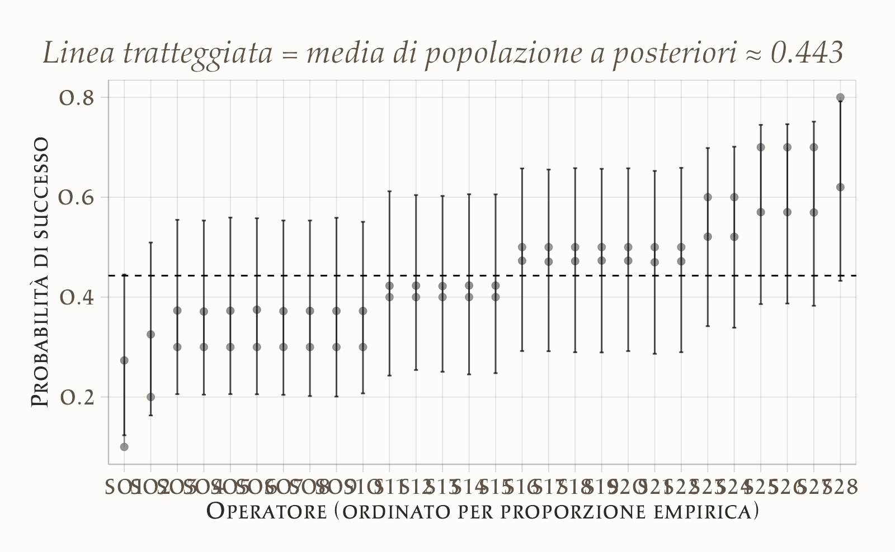
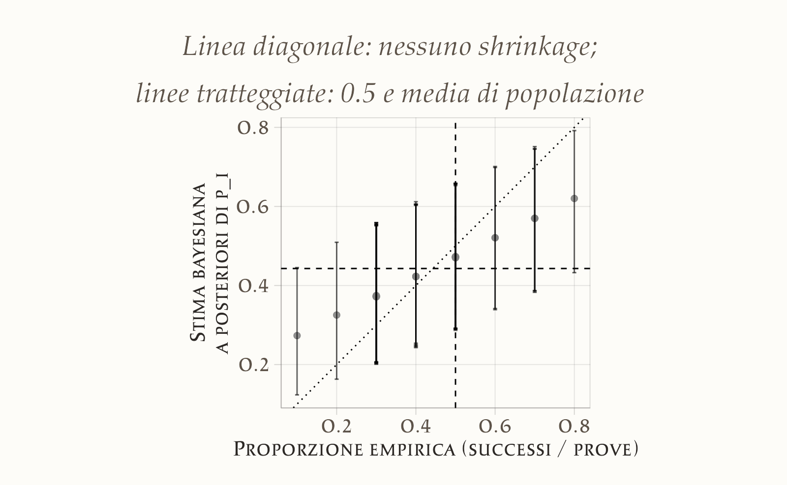
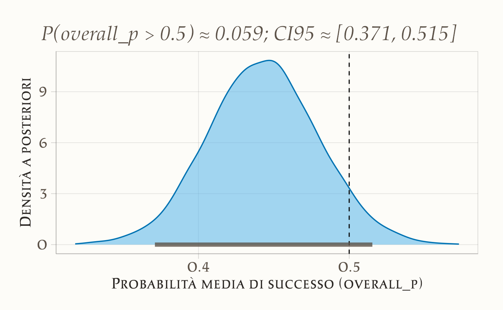

here::here("code", "_common.R") |>
source()
if (!requireNamespace("pacman")) install.packages("pacman")
pacman::p_load(cmdstanr, posterior, bayesplot, ggplot2, dplyr, tibble, stringr)
conflicts_prefer(posterior::ess_bulk)
conflicts_prefer(posterior::ess_tail)22 Modello gerarchico beta-binomiale
Introduzione
In molti compiti psicologici osserviamo, per ciascun partecipante, successi/insuccessi su un certo numero di prove. Vogliamo rispondere a tre domande:
- (Q1) qual è la probabilità di successo per ogni individuo?
- (Q2) come variano queste probabilità nella popolazione (media e dispersione)?
- (Q3) date poche prove, come evitare stime estreme e instabili?
Il modello gerarchico beta–binomiale risponde a tutte e tre, introducendo un livello di popolazione che regolarizza le stime individuali (shrinkage) e quantifica la variabilità tra soggetti.
Il modello si fonda su tre livelli. Al primo livello, i dati osservati sono modellati come variabili binomiali: per ogni partecipante osserviamo un certo numero di risposte corrette in un numero fissato di prove. Al secondo livello, ciascuna probabilità individuale di successo è considerata non come un valore fisso, ma come un’estrazione da una distribuzione Beta comune a tutti i partecipanti. Al terzo livello, i parametri della distribuzione Beta, che descrivono la tendenza centrale e la variabilità tra le probabilità individuali, sono essi stessi trattati come incerti e stimati dai dati attraverso delle distribuzioni a priori.
Un modo intuitivo di interpretare questi iperparametri è attraverso la parametrizzazione in termini di media e concentrazione. La media rappresenta la probabilità di successo tipica nella popolazione, mentre la concentrazione descrive quanto le probabilità individuali tendono a essere simili tra loro oppure a differenziarsi. Valori alti della concentrazione implicano che le probabilità dei singoli partecipanti sono molto vicine alla media di popolazione; valori bassi indicano invece una maggiore eterogeneità. Questa riformulazione semplifica la scelta delle distribuzioni a priori e rende più immediata l’interpretazione psicologica dei risultati.
Dal punto di vista inferenziale, il modello consente di ottenere contemporaneamente stime individuali e stime di popolazione. Le prime beneficiano del fenomeno noto come shrinkage: le probabilità di successo di ciascun partecipante non vengono stimate isolatamente, ma vengono “attirate” verso la media di popolazione, con un’intensità che dipende dalla quantità di dati disponibili per quel partecipante. Questo meccanismo evita che pochi tentativi producano stime estreme e instabili, rendendo più robuste le conclusioni. Le seconde, cioè le stime di popolazione, forniscono una descrizione sintetica della distribuzione delle abilità e permettono di valutare se la prestazione media del gruppo si discosta da ciò che ci si attenderebbe dal puro caso.
In questo capitolo vedremo come costruire e stimare un modello gerarchico beta-binomiale con Stan, applicandolo a dati reali tratti dalla letteratura. L’analisi mostrerà non solo come implementare tecnicamente il modello, ma anche come interpretare i risultati a livello individuale e collettivo, evidenziando il ruolo centrale della struttura gerarchica nell’affrontare in maniera coerente la variabilità dei dati psicologici.
Panoramica del capitolo
- Specificare un modello beta–binomiale gerarchico.
- Spiegare il ruolo di media di popolazione (μ) e concentrazione (κ).
- Interpretare lo shrinkage e collegarlo al numero di prove per soggetto.
- Leggere le principali diagnostiche MCMC.
- Confrontare la prestazione media con un valore di riferimento (es. 0.5).
22.1 Motivazione per i modelli gerarchici bayesiani
Quando si lavora con dati psicologici raccolti da più individui, occorre bilanciare l’attenzione alle differenze individuali con la necessità di trarre conclusioni valide a livello di popolazione. I modelli gerarchici bayesiani offrono un quadro naturale per farlo, perché stimano simultaneamente i parametri dei singoli partecipanti e quelli che descrivono l’intera popolazione.
L’idea di fondo è che ogni individuo fornisca informazioni non solo sul proprio comportamento, ma anche su come i comportamenti si distribuiscono in un gruppo più ampio. Così, ad esempio, se un partecipante ha poche prove, la stima della sua probabilità di successo non si basa soltanto sui suoi dati, ma viene informata anche dalle prestazioni degli altri. Questo meccanismo riduce il rischio di sovrainterpretare fluttuazioni casuali e produce stime più stabili. Allo stesso tempo, i dati di ciascun individuo migliorano la conoscenza dei parametri di popolazione, che a loro volta diventano un punto di riferimento per le inferenze sui singoli.
Dal punto di vista concettuale, i modelli gerarchici si distinguono dai modelli semplici perché la distribuzione a priori dei parametri individuali non è fissata una volta per tutte, ma è definita da iperparametri che descrivono l’intera popolazione. Si crea così una catena di inferenza: prima si apprende sui parametri di popolazione, poi si usano queste informazioni per affinare le stime individuali. La gerarchia riflette quindi una visione coerente con la realtà psicologica, in cui gli individui sono simili ma non identici, e le loro differenze sono interpretate alla luce di una struttura comune.
Questo duplice livello di inferenza è cruciale perché consente di distinguere tra variazioni casuali attribuibili al singolo partecipante e tendenze generali che riflettono caratteristiche della popolazione. Sapere, ad esempio, che le probabilità individuali di successo variano attorno a una media comune permette di collocare ogni individuo in un contesto più ampio, evitando interpretazioni basate solo sulle sue risposte.
Un vantaggio decisivo dei modelli gerarchici è che l’inferenza a livello di popolazione va oltre i partecipanti effettivamente osservati: conoscere i parametri che governano la distribuzione delle abilità, preferenze o probabilità di risposta consente di prevedere nuovi soggetti non inclusi nello studio, ampliando la portata delle conclusioni. In questo senso, i parametri di popolazione diventano strumenti predittivi: indicano quale variabilità aspettarsi in futuri studi e offrono un quadro generale delle prestazioni nel dominio indagato.
Dal punto di vista pratico, questo approccio ha un valore evidente. I ricercatori sono spesso interessati non solo a “questi” partecipanti, ma alla popolazione di provenienza. Un modello gerarchico risponde a questa esigenza fornendo stime dei parametri superiori su cui basare generalizzazioni affidabili. In sintesi, la motivazione per l’uso dei modelli gerarchici bayesiani risiede nella loro capacità di sfruttare l’informazione condivisa tra individui, migliorare la precisione delle stime individuali, ridurre la sensibilità al rumore campionario e, allo stesso tempo, fornire una descrizione generale della popolazione di interesse—integrando in un unico quadro coerente informazione individuale e collettiva e arricchendo sia l’interpretazione teorica sia la rilevanza applicativa dei risultati.
22.2 Struttura gerarchica dei dati
Per comprendere meglio il funzionamento di un modello gerarchico, è utile considerare come i dati psicologici siano spesso organizzati in più livelli. Prendiamo come esempio lo studio di Rosa e colleghi del 1998, dedicato alla cosiddetta “terapia tattile”. In quell’esperimento gli operatori erano chiamati a identificare, senza alcun contatto visivo, quale mano fosse stata “selezionata” da un esaminatore. Ogni operatore ha affrontato dieci prove e le risposte sono state registrate come corrette o errate.
La struttura dei dati emerge con immediatezza. Al livello più basso si trovano le singole prove, cioè le osservazioni binarie di ciascun operatore. Queste osservazioni sono naturalmente raggruppate per individuo, costituendo un livello intermedio che riflette le prestazioni di ciascun partecipante. Infine, tutti gli operatori appartengono a una popolazione più ampia di praticanti della terapia, che rappresenta il livello superiore della gerarchia.
Questa organizzazione a più livelli non è un artificio statistico, ma una caratteristica intrinseca della ricerca psicologica. L’analisi dei dati deve dunque tener conto sia delle differenze individuali sia di ciò che accomuna i partecipanti. Un modello gerarchico permette di descrivere entrambi gli aspetti contemporaneamente: da un lato fornisce stime delle abilità dei singoli operatori, dall’altro stima i parametri che governano la distribuzione complessiva delle abilità nella popolazione.
Grazie a questa prospettiva multilivello, diventa possibile rispondere a domande che non riguardano solo la prestazione di un partecipante specifico, ma che coinvolgono l’intero gruppo. Ad esempio, possiamo chiederci se, nel complesso, gli operatori abbiano mostrato un’abilità superiore a quella attesa dal puro caso, e allo stesso tempo possiamo esplorare quanto le prestazioni differiscano da un individuo all’altro. In questo modo, la struttura gerarchica dei dati diventa la chiave per un’analisi capace di integrare differenze individuali e generalizzazioni di popolazione in un quadro coerente e informativo.
Assunzione chiave – scambiabilità: trattiamo le probabilità individuali come scambiabili a priori (estrazioni dalla stessa Beta). È un’ipotesi sensata quando i partecipanti sono reclutati con criteri omogenei e non ci sono covariate che distinguono sottogruppi. Se emergono sottogruppi o predittori, il passo naturale è passare a un modello con predittori (logit-Beta o regressione logistica gerarchica).
22.3 Modelli gerarchici bayesiani: una panoramica tecnica
Dal punto di vista tecnico, un modello gerarchico bayesiano si distingue perché i parametri individuali non hanno una distribuzione a priori fissa e predeterminata, ma dipendono da parametri di livello superiore, detti iperparametri. In questo modo la struttura del modello riflette una catena di dipendenze: prima si apprendono i parametri che descrivono la popolazione, e successivamente queste informazioni vengono utilizzate per affinare le stime dei singoli partecipanti.
Se consideriamo un modello semplice e non gerarchico, potremmo assegnare a ciascun parametro individuale una distribuzione a priori autonoma, ad esempio una Gaussiana con media e varianza fissate. Un approccio di questo tipo, però, tratta ogni individuo come completamente separato dagli altri, ignorando il fatto che tutti provengono dalla stessa popolazione e che quindi le loro prestazioni sono verosimilmente correlate. Al contrario, in un modello gerarchico i parametri individuali sono visti come estrazioni da una distribuzione comune, governata dagli iperparametri. Questi ultimi hanno a loro volta delle distribuzioni a priori, che rappresentano il livello più alto della gerarchia.
Formalmente, possiamo pensare a tre passaggi. I dati osservati dipendono dai parametri individuali attraverso la verosimiglianza. I parametri individuali sono distribuiti secondo una legge che dipende dagli iperparametri. Infine, gli iperparametri sono regolati da distribuzioni a priori che esprimono le nostre conoscenze iniziali. Questa stratificazione permette di far dialogare i dati dei singoli con la conoscenza di gruppo, creando un meccanismo di inferenza che unisce livelli diversi di informazione.
Un vantaggio importante di questa impostazione è che la variabilità individuale non viene ignorata, ma anzi modellata in modo esplicito. I parametri di popolazione agiscono come un collante che unisce le stime dei partecipanti, permettendo alle informazioni di fluire tra individui e migliorando la precisione complessiva. Dal punto di vista psicologico, ciò riflette l’idea che i soggetti siano tra loro simili ma non identici, e che le loro differenze possano essere comprese soltanto all’interno di una cornice condivisa.
In questo senso, i modelli gerarchici bayesiani offrono una prospettiva potente e flessibile. Consentono di trattare simultaneamente i dati individuali e collettivi, garantiscono inferenze più stabili soprattutto quando il numero di osservazioni è limitato e, soprattutto, rendono possibile generalizzare oltre il campione osservato, cogliendo l’essenza di un fenomeno a livello di popolazione senza perdere di vista la ricchezza delle differenze tra persone.
22.4 Analisi bayesiana della “terapia tattile”
Per rendere concreti i principi esposti finora, ci concentriamo su un esperimento che ha avuto un’ampia risonanza: lo studio di Rosa et al. (1998) sulla cosiddetta “terapia tattile”. In questa pratica, alcuni operatori sostenevano di percepire un presunto “campo energetico” attorno al corpo umano. L’esperimento mirava a verificare in maniera rigorosa questa capacità. Agli operatori veniva chiesto di identificare quale mano fosse stata selezionata da un esaminatore, senza alcun contatto visivo e senza possibilità di ricevere indizi sensoriali. Ogni operatore ha completato dieci prove, e per ciascuna la risposta è stata classificata come corretta oppure errata.
Il nostro obiettivo è stimare, per ciascun operatore, la probabilità di dare una risposta corretta, confrontando queste stime con l’ipotesi nulla di puro caso, che corrisponde a una probabilità di successo del cinquanta per cento. Oltre a questo, vogliamo anche valutare se, a livello di gruppo, esistano prove credibili a favore di una prestazione superiore rispetto al caso e quanto varino le abilità tra i diversi operatori.
Per affrontare queste domande, i dati vengono aggregati in modo da calcolare il numero di risposte corrette su dieci per ciascun partecipante. Si ottiene così, per ogni operatore, una coppia di valori che rappresenta il numero di successi e il numero totale di prove. Questa organizzazione dei dati riflette perfettamente la struttura del modello gerarchico: a livello individuale le osservazioni sono descritte da una distribuzione binomiale, mentre a livello di popolazione le probabilità di successo dei singoli sono modellate come estrazioni da una distribuzione Beta comune.
Gli iperparametri di questa Beta, che descrivono la tendenza centrale e la variabilità tra gli operatori, sono a loro volta trattati come incerti e stimati dai dati. Una volta eseguita l’analisi bayesiana, possiamo quindi ottenere non solo la stima della probabilità di successo per ogni operatore, ma anche la distribuzione a posteriori della probabilità media di successo nel gruppo. Questo permette di valutare se la prestazione collettiva differisce davvero da quella che ci aspetteremmo in condizioni di puro caso.
L’analisi di questo esperimento diventa così un esempio paradigmatico dell’utilità dei modelli gerarchici. Da un lato mostra come sia possibile stimare e confrontare le prestazioni individuali, dall’altro evidenzia come l’approccio bayesiano consenta di integrare queste informazioni in un quadro più ampio, capace di descrivere la popolazione e di formulare previsioni per nuovi individui.
22.4.1 I dati
Per prima cosa importiamo i dati forniti da Kruschke (2014). È utile dare un’occhiata alle variabili disponibili e verificare che ogni operatore abbia lo stesso numero di prove.
# Definisci l'URL del file CSV su GitHub
url <- "https://raw.githubusercontent.com/boboppie/kruschke-doing_bayesian_data_analysis/master/2e/TherapeuticTouchData.csv"
# Leggi direttamente il CSV dall'URL
tt_dat <- read.csv(url)
glimpse(tt_dat)
#> Rows: 280
#> Columns: 2
#> $ y <int> 1, 0, 0, 0, 0, 0, 0, 0, 0, 0, 0, 0, 0, 1, 0, 0, 1, 0, 0, 0, 0, 0, 0,…
#> $ s <chr> "S01", "S01", "S01", "S01", "S01", "S01", "S01", "S01", "S01", "S01"…Nel dataset la colonna y codifica l’esito binario della prova, con 1 per risposta corretta e 0 per risposta errata; la colonna s identifica l’operatore. Prima di aggregare, conviene verificare che la numerosità di prove per operatore sia quella attesa e che non vi siano soggetti con un numero di osservazioni anomalo. Se l’esperimento prevede dieci prove per operatore, un controllo immediato chiarisce eventuali discrepanze.
checks <- tt_dat %>%
dplyr::count(s, name = "n_trials") %>%
arrange(s)
checks
#> s n_trials
#> 1 S01 10
#> 2 S02 10
#> 3 S03 10
#> 4 S04 10
#> 5 S05 10
#> 6 S06 10
#> 7 S07 10
#> 8 S08 10
#> 9 S09 10
#> 10 S10 10
#> 11 S11 10
#> 12 S12 10
#> 13 S13 10
#> 14 S14 10
#> 15 S15 10
#> 16 S16 10
#> 17 S17 10
#> 18 S18 10
#> 19 S19 10
#> 20 S20 10
#> 21 S21 10
#> 22 S22 10
#> 23 S23 10
#> 24 S24 10
#> 25 S25 10
#> 26 S26 10
#> 27 S27 10
#> 28 S28 10Una volta confermata la struttura, calcoliamo per ciascun operatore i successi totali e il numero di prove, ottenendo i sufficient statistics per la verosimiglianza binomiale. Da qui si ricava anche la proporzione empirica di risposte corrette, utile come benchmark descrittivo ma non ancora regolarizzata dal modello gerarchico.
by_subject <- tt_dat %>%
group_by(s) %>%
summarise(
y = sum(y),
n_trials = n(),
prop_emp = y / n_trials,
.groups = "drop"
) %>%
arrange(s)
by_subject
#> # A tibble: 28 × 4
#> s y n_trials prop_emp
#> <chr> <int> <int> <dbl>
#> 1 S01 1 10 0.1
#> 2 S02 2 10 0.2
#> 3 S03 3 10 0.3
#> 4 S04 3 10 0.3
#> 5 S05 3 10 0.3
#> 6 S06 3 10 0.3
#> 7 S07 3 10 0.3
#> 8 S08 3 10 0.3
#> 9 S09 3 10 0.3
#> 10 S10 3 10 0.3
#> # ℹ 18 more rowsIl passo successivo è la specificazione del modello probabilistico. Per ogni operatore \(i\) denotiamo con \(y_i\) il numero di successi su \(n_i\) prove e con \(p_i\) la probabilità di successo. La verosimiglianza è binomiale, \(y_i \sim \text{Binomiale}(n_i, p_i)\). Le probabilità individuali non sono fissate a priori, ma modellate come estrazioni indipendenti e scambiabili da una stessa distribuzione Beta, \(p_i \sim \text{Beta}(\alpha,\beta)\). Questa scelta crea il livello di popolazione del modello: \(\alpha\) e \(\beta\) regolano, rispettivamente, la tendenza centrale e la dispersione delle \(p_i\) nella popolazione.
Quando \(\alpha\) e \(\beta\) sono noti, la coniugatezza Beta–Binomiale implica che la distribuzione a posteriori di \(p_i\) è ancora Beta, \(p_i \mid y_i \sim \text{Beta}(\alpha + y_i,\, \beta + n_i - y_i)\). Nel caso realistico in cui \(\alpha\) e \(\beta\) siano incogniti, assegniamo dei prior anche a questi iperparametri. È importante essere espliciti sulla parametrizzazione della Gamma, poiché in letteratura compaiono sia convenzioni shape–rate sia shape–scale. Qui adotteremo la forma shape–rate, indicata come \(\text{Gamma}(k,\ r)\), dove \(E[X]=k/r\). Scelte ragionevoli e poco informative possono essere, ad esempio, \(\alpha \sim \text{Gamma}(2,\,2)\) e \(\beta \sim \text{Gamma}(2,\,2)\), che corrispondono a media uguale a 1 per ciascun iperparametro e varianza moderata; in alternativa, si può lavorare nella parametrizzazione \((\mu,\kappa)\), con \(\mu=\alpha/(\alpha+\beta)\) e \(\kappa=\alpha+\beta\), scegliendo prior direttamente su media di popolazione e concentrazione. In ogni caso, la scelta dei prior va motivata rispetto al dominio psicologico e alla scala delle probabilità attese.
Per passare alla stima con Stan, prepariamo una lista compatta con gli oggetti necessari. È pratica comune ordinare i soggetti, convertire in interi e verificare le lunghezze coerenti. La lista minima contiene il numero di soggetti \(N\), il vettore dei successi y e il vettore delle prove n_trials.
stan_data <- list(
N = nrow(by_subject),
y = as.integer(by_subject$y),
n_trials = as.integer(by_subject$n_trials)
)
str(stan_data)
#> List of 3
#> $ N : int 28
#> $ y : int [1:28] 1 2 3 3 3 3 3 3 3 3 ...
#> $ n_trials: int [1:28] 10 10 10 10 10 10 10 10 10 10 ...A questo punto i dati sono pronti per l’inferenza. La modellazione gerarchica introdurrà regolarizzazione sulle stime individuali \(p_i\), attenuando la variabilità spuriosa dovuta a pochi tentativi e consentendo, contemporaneamente, di apprendere la media e l’eterogeneità delle probabilità di successo a livello di popolazione. In seguito mostreremo come questa struttura si traduce in codice Stan e perché la scelta di prior su \((\alpha,\beta)\) oppure su \((\mu,\kappa)\) può incidere sulla stabilità computazionale e sulla leggibilità interpretativa dei risultati.
22.5 Modello Stan
Arrivati a questo punto, i dati sono pronti per essere analizzati con un modello gerarchico in Stan. La struttura matematica che abbiamo descritto in precedenza si traduce in un programma che segue fedelmente la storia generativa dei dati. Per ogni operatore introduciamo una probabilità di successo \(p_i\), modellata come estrazione da una distribuzione Beta comune, mentre i conteggi osservati di risposte corrette vengono trattati come variabili binomiali condizionate su \(p_i\). Gli iperparametri della Beta, \(\alpha\) e \(\beta\), vengono stimati a loro volta, con distribuzioni a priori che riflettono le nostre assunzioni iniziali.
In Stan, il modello può essere scritto in questo modo:
data {
int<lower=1> N; // numero di operatori
int<lower=0> y[N]; // successi per operatore
int<lower=1> n_trials[N]; // prove per operatore
}
parameters {
real<lower=0> alpha; // parametro della Beta
real<lower=0> beta; // parametro della Beta
vector<lower=0, upper=1>[N] p; // probabilità individuali
}
model {
alpha ~ gamma(2, 2); // prior su alpha (shape-rate)
beta ~ gamma(2, 2); // prior su beta (shape-rate)
p ~ beta(alpha, beta); // distribuzione gerarchica delle p_i
y ~ binomial(n_trials, p); // verosimiglianza dei dati
}
generated quantities {
real overall_p = alpha / (alpha + beta); // media di popolazione
}Il blocco data definisce le informazioni osservate: il numero di partecipanti, i successi e i tentativi per ciascun soggetto. Nel blocco parameters compaiono i parametri da stimare: gli iperparametri \(\alpha\) e \(\beta\), entrambi vincolati a valori positivi, e le probabilità individuali \(p_i\), che per costruzione devono trovarsi nell’intervallo compreso tra zero e uno.
Nel blocco model vengono specificate le distribuzioni a priori e la relazione tra parametri e dati. Le prior su \(\alpha\) e \(\beta\) sono state scelte come distribuzioni Gamma poco informative, capaci di lasciare spazio a un ampio spettro di configurazioni possibili. Le probabilità individuali vengono modellate come estrazioni da una Beta con parametri \(\alpha\) e \(\beta\). Infine, i conteggi di risposte corrette sono legati alle rispettive probabilità tramite la verosimiglianza binomiale.
Il blocco generated quantities calcola la probabilità media di successo nella popolazione, che corrisponde al rapporto \(\alpha / (\alpha+\beta)\). Questo valore è spesso di grande interesse, perché riassume la prestazione collettiva e consente di confrontarla con il valore teorico atteso in condizioni di puro caso.
La scrittura del modello in Stan non è solo una traduzione meccanica della teoria, ma un’occasione per riflettere sulle scelte modellistiche. Le distribuzioni a priori, la parametrizzazione degli iperparametri e la presenza del blocco generativo aggiuntivo non sono dettagli tecnici marginali: rappresentano decisioni che influiscono sulla stabilità dell’inferenza, sulla leggibilità dei risultati e sulla possibilità di formulare risposte precise alle domande psicologiche poste dallo studio.
22.6 Compilazione e sampling
Una volta definito il modello, il passo successivo consiste nel compilarlo e avviare il campionamento MCMC con cmdstanr. La compilazione traduce il codice Stan in un eseguibile ottimizzato; è un’operazione che si esegue una volta per modello, dopodiché il binario può essere riutilizzato. Conviene mantenere una struttura di progetto ordinata, salvando il file .stan in una cartella dedicata e richiamandolo tramite un percorso esplicito. L’oggetto CmdStanModel restituito dalla compilazione espone il metodo sample(), che gestisce l’intera esecuzione delle catene, il warmup, la fase di adattamento e la produzione dei draw posteriori.
# Percorso del modello .stan (adatta al tuo progetto)
stan_file <- here::here("stan", "h_beta_binom_model.stan")
# Compilazione del modello
mod <- cmdstan_model(stan_file)
# Impostazioni di sampling: scelte ragionevoli per un modello leggero come questo
set.seed(84735)
fit <- mod$sample(
data = stan_data,
chains = 4,
parallel_chains = 4,
iter_warmup = 1000,
iter_sampling = 2000,
adapt_delta = 0.9,
max_treedepth = 12,
refresh = 200
)Nel codice la scelta di quattro catene parallele velocizza l’esecuzione e facilita la diagnosi di convergenza. Una lunghezza totale di tremila iterazioni per catena, con un terzo destinato al warmup e due terzi al campionamento, è in genere adeguata per un modello beta–binomiale gerarchico con pochi parametri. Il controllo fine di adapt_delta e max_treedepth aiuta a prevenire divergenze e saturazioni dell’algoritmo di Hamiltonian Monte Carlo: un valore di adapt_delta pari a 0.9 è spesso un buon compromesso tra stabilità e velocità, mentre una profondità massima di dodici consente traiettorie sufficientemente lunghe senza penalizzare eccessivamente i tempi. Se dovessero comparire divergenze nei messaggi a schermo, aumentare gradualmente adapt_delta verso 0.95–0.99 è la prima mossa sensata; qualora il sampler segnalasse ripetutamente “maximum treedepth exceeded”, estendere max_treedepth può essere utile, sebbene la causa vada interpretata anche alla luce di possibili problemi di parametrizzazione o di prior troppo stretti.
Al termine dell’esecuzione, l’oggetto fit contiene i draw posteriori, le metriche di adattamento e il riepilogo delle diagnostiche essenziali. È buona pratica iniziare con un controllo sintetico usando fit$summary() per esaminare R̂ e dimensione campionaria efficace; qualsiasi valore di R̂ distante da 1 indica problemi di mescolamento tra catene, mentre valori molto bassi di ESS suggeriscono autocorrelazione elevata e quindi una minore informazione campionaria di quanto il numero di iterazioni lasci intendere.
sum_tbl <- fit$summary()
sum_tbl %>%
dplyr::filter(variable %in% c("alpha", "beta", "overall_p") | grepl("^p\\[", variable)) %>%
print(n = 10)
#> # A tibble: 31 × 10
#> variable mean median sd mad q5 q95 rhat ess_bulk ess_tail
#> <chr> <dbl> <dbl> <dbl> <dbl> <dbl> <dbl> <dbl> <dbl> <dbl>
#> 1 alpha 4.591 4.536 0.865 0.862 3.292 6.120 1.000 8127.678 6256.311
#> 2 beta 5.753 5.691 0.927 0.928 4.328 7.395 1.001 10179.787 6262.166
#> 3 p[1] 0.273 0.266 0.098 0.101 0.123 0.445 1.002 13832.020 5804.423
#> 4 p[2] 0.325 0.319 0.105 0.107 0.163 0.509 1.000 18248.354 5668.579
#> 5 p[3] 0.373 0.369 0.106 0.108 0.206 0.555 1.001 15178.133 5929.551
#> 6 p[4] 0.371 0.367 0.106 0.108 0.205 0.553 1.002 16205.868 5427.424
#> 7 p[5] 0.373 0.368 0.106 0.109 0.206 0.559 1.000 14469.777 6254.164
#> 8 p[6] 0.375 0.370 0.107 0.109 0.205 0.558 1.000 16662.048 5477.770
#> 9 p[7] 0.372 0.367 0.107 0.112 0.204 0.553 1.000 15713.602 6484.229
#> 10 p[8] 0.372 0.370 0.107 0.108 0.202 0.553 1.003 15450.860 4967.339
#> # ℹ 21 more rowsUn’ispezione iniziale delle diagnostiche globali può essere condotta anche con le funzioni di posterior. La conversione a draws_array o draws_df permette di utilizzare strumenti flessibili per ulteriori controlli. Quando l’obiettivo è verificare rapidamente che non vi siano problemi sistematici, un’occhiata a R̂ e all’ESS dei parametri di popolazione e di un sottoinsieme di \(p_i\) è spesso sufficiente per decidere se proseguire con analisi più approfondite.
dr <- fit$draws(variables = c("alpha","beta","overall_p","p[1]","p[2]","p[3]"))
posterior::summarise_draws(dr, "mean","sd","rhat","ess_bulk","ess_tail")
#> # A tibble: 6 × 6
#> variable mean sd rhat ess_bulk ess_tail
#> <chr> <dbl> <dbl> <dbl> <dbl> <dbl>
#> 1 alpha 4.591 0.865 1.000 8127.678 6256.311
#> 2 beta 5.753 0.927 1.001 10179.787 6262.166
#> 3 overall_p 0.443 0.037 1.000 9057.208 6343.897
#> 4 p[1] 0.273 0.098 1.002 13832.020 5804.423
#> 5 p[2] 0.325 0.105 1.000 18248.354 5668.579
#> 6 p[3] 0.373 0.106 1.001 15178.133 5929.551Se le diagnostiche confermano convergenza e buona esplorazione della posteriore, si può passare con tranquillità alle analisi substantive. In caso contrario, vale la pena considerare piccoli aggiustamenti mirati. Un aumento di adapt_delta tende a eliminare le divergenze al costo di un campionamento leggermente più lento; qualora persista autocorrelazione elevata, un incremento di iter_sampling migliora l’ESS, mentre problemi ostinati di geometria della posteriore spesso traggono beneficio da una parametrizzazione alternativa. In questo modello specifico, la riformulazione in termini di media di popolazione \(\mu\) e concentrazione \(\kappa\) è un’opzione pratica che può rendere più regolare la geometria, come verrà illustrato più avanti.
Chiusa questa fase, il modello è pronto per le esplorazioni posteriori e, soprattutto, per collegare le quantità di interesse psicologico—le probabilità individuali \(p_i\) e la media di popolazione—alle domande che motivano l’analisi. Nei passaggi successivi entreremo nel merito della lettura delle distribuzioni a posteriori, mostreremo come visualizzare lo shrinkage e come quantificare l’evidenza rispetto all’ipotesi di caso puro.
22.6.1 Controlli predittivi essenziali
Prior predictive. Prima di osservare i dati, i prior su (α,β) o (μ,κ) implicano una distribuzione plausibile delle \(p_i\) e dei conteggi \(y_i\)? Se i prior generano sistematicamente prestazioni “impossibili” (quasi 0 o quasi 1 con alta concentrazione), sono incoerenti col dominio psicologico.
Posterior predictive. Dopo il fit, i dati replicati dal modello somigliano ai dati osservati (istogrammi delle proporzioni per soggetto, media di gruppo, varianza tra soggetti)? Divergenze sistematiche suggeriscono di rivedere la concentrazione κ o l’assunzione di scambiabilità.
22.7 Shrinkage bayesiano
Lo shrinkage è esattamente la media pesata \(\mathbb{E}[p_i \mid y_i]=(1-w_i)\mu + w_i\hat p_i\), con \(w_i=\frac{n_i}{n_i+\kappa}\): più prove → \(w_i\) grande → la stima segue \(\hat p_i\); κ grande → \(w_i\) piccolo → le stime collassano verso μ. I grafici che seguono mostrano proprio questo comportamento.
Per comprendere l’idea, immaginiamo due operatori nello studio della therapeutic touch. Il primo ha ottenuto 9 risposte corrette su 10, il secondo soltanto 1 su 10. Se prendessimo queste proporzioni alla lettera, potremmo concludere che il primo è straordinariamente abile e il secondo del tutto incapace. Tuttavia, con soli dieci tentativi ciascuno, questi risultati estremi possono riflettere più la variabilità casuale che una reale differenza di abilità. Il modello gerarchico affronta questo problema facendo “dialogare” le stime individuali con la distribuzione di popolazione. Le probabilità di successo dei singoli non sono stimate in isolamento, ma vengono attratte verso la media collettiva.
Questo spostamento non è uguale per tutti. Chi ha molti dati fornisce un’evidenza solida, e quindi la sua probabilità stimata rimane più vicina al valore empirico osservato. Chi ha pochi dati, invece, viene corretto maggiormente e la sua stima viene spinta più decisamente verso la media del gruppo. In questo modo, i partecipanti con campioni piccoli o con esiti estremi non vengono interpretati in modo sproporzionato, ma ricevono una stima più prudente e credibile.
Lo shrinkage non è un difetto, bensì un vantaggio del modello. Esso riduce il rischio di sovrainterpretare il rumore dei dati, stabilizza le stime e consente di ottenere inferenze più robuste. In termini psicologici, riflette l’idea che gli individui siano diversi tra loro, ma comunque simili a sufficienza da condividere un contesto comune. L’effetto pratico è che le probabilità individuali stimate non ricalcano pedissequamente le proporzioni empiriche, ma si collocano in un punto intermedio tra l’esperienza del singolo e l’informazione collettiva.
Questo fenomeno diventa evidente quando si confrontano le proporzioni empiriche di successo con le stime bayesiane. In un grafico in cui per ciascun operatore si rappresentano entrambe le quantità, le proporzioni osservate tendono a variare in modo ampio, mentre le stime posteriori appaiono più contenute e ravvicinate tra loro. I valori estremi vengono moderati, e tutti gli operatori mostrano una certa attrazione verso la media di popolazione. È proprio in questa dinamica che si manifesta lo shrinkage, il cuore dell’approccio gerarchico bayesiano.
Passiamo ora alla parte pratica su come visualizzare lo shrinkage nei dati della therapeutic touch. Iniziamo con il recuperare le stime a posteriori di alpha e beta.
# Estrazione dei draw di p[i] e della media di popolazione
draws_p <- fit$draws(variables = "p") # draws_array
draws_mu <- fit$draws(variables = "overall_p") # draws_array
# Riassunto con media, mediana, sd e diagnostiche
sum_p <- posterior::summarise_draws(
draws_p,
"mean", "median", "sd", "rhat", "ess_bulk", "ess_tail"
) %>%
mutate(s = as.integer(str_extract(variable, "\\d+"))) %>%
arrange(s)
# Calcolo dei quantili 5% e 95% a parte
qs <- posterior::summarise_draws(draws_p, ~ quantile2(.x, probs = c(0.05, 0.95))) %>%
mutate(s = as.integer(str_extract(variable, "\\d+"))) %>%
arrange(s)
# Unione
sum_p <- sum_p %>%
left_join(qs %>% dplyr::select(s, q5 = `q5`, q95 = `q95`), by = "s")
head(sum_p)
#> # A tibble: 6 × 10
#> variable mean median sd rhat ess_bulk ess_tail s q5 q95
#> <chr> <dbl> <dbl> <dbl> <dbl> <dbl> <dbl> <int> <dbl> <dbl>
#> 1 p[1] 0.273 0.266 0.098 1.002 13832.020 5804.423 1.000 0.123 0.445
#> 2 p[2] 0.325 0.319 0.105 1.000 18248.354 5668.579 2.000 0.163 0.509
#> 3 p[3] 0.373 0.369 0.106 1.001 15178.133 5929.551 3.000 0.206 0.555
#> 4 p[4] 0.371 0.367 0.106 1.002 16205.868 5427.424 4.000 0.205 0.553
#> 5 p[5] 0.373 0.368 0.106 1.000 14469.777 6254.164 5.000 0.206 0.559
#> 6 p[6] 0.375 0.370 0.107 1.000 16662.048 5477.770 6.000 0.205 0.558# Riassunto per la media di popolazione
sum_mu <- posterior::summarise_draws(draws_mu)
# Porta gli ID soggetto su un indice numerico coerente con p[1], p[2], ...
by_subject <- by_subject %>%
mutate(s_idx = as.integer(stringr::str_extract(s, "\\d+"))) %>%
arrange(s_idx)
# Anche sum_p ha s come intero già pronto (estratto da "p[i]")
# Se in sum_p la colonna si chiama 's', lasciamo così
# Integrazione con le proporzioni empiriche usando l'indice numerico
df_shrink <- by_subject %>%
select(s, s_idx, prop_emp, n_trials) %>%
inner_join(
sum_p %>%
dplyr::select(s, # questo è l'indice numerico 1..N
post_mean = mean,
post_med = median,
post_q05 = `q5`,
post_q95 = `q95`),
by = join_by(s_idx == s)
) %>%
arrange(prop_emp) %>%
mutate(s_ord = factor(s, levels = s))
# Controllo rapido
dplyr::glimpse(df_shrink)
#> Rows: 28
#> Columns: 9
#> $ s <chr> "S01", "S02", "S03", "S04", "S05", "S06", "S07", "S08", "S09…
#> $ s_idx <int> 1, 2, 3, 4, 5, 6, 7, 8, 9, 10, 11, 12, 13, 14, 15, 16, 17, 1…
#> $ prop_emp <dbl> 0.1, 0.2, 0.3, 0.3, 0.3, 0.3, 0.3, 0.3, 0.3, 0.3, 0.4, 0.4, …
#> $ n_trials <int> 10, 10, 10, 10, 10, 10, 10, 10, 10, 10, 10, 10, 10, 10, 10, …
#> $ post_mean <dbl> 0.273, 0.325, 0.373, 0.371, 0.373, 0.375, 0.372, 0.372, 0.37…
#> $ post_med <dbl> 0.266, 0.319, 0.369, 0.367, 0.368, 0.370, 0.367, 0.370, 0.36…
#> $ post_q05 <dbl> 0.123, 0.163, 0.206, 0.205, 0.206, 0.205, 0.204, 0.202, 0.20…
#> $ post_q95 <dbl> 0.445, 0.509, 0.555, 0.553, 0.559, 0.558, 0.553, 0.553, 0.55…
#> $ s_ord <fct> S01, S02, S03, S04, S05, S06, S07, S08, S09, S10, S11, S12, …Il primo grafico mette in fila gli operatori ordinati per proporzione empirica e, per ciascuno, disegna un segmento che va dalla proporzione osservata alla stima a posteriori. Il segmento mostra visivamente la contrazione verso la media di popolazione, mentre la barra orizzontale rappresenta l’intervallo di credibilità della stima bayesiana.
# Media di popolazione stimata (posterior mean)
mu_hat <- sum_mu$mean
# Grafico “lollipop” di shrinkage con IC al 90%
gg_shrink <- ggplot(df_shrink, aes(x = s_ord)) +
geom_segment(aes(xend = s_ord, y = prop_emp, yend = post_mean), linewidth = 0.4, alpha = 0.7) +
geom_point(aes(y = prop_emp), size = 2, alpha = 0.8) +
geom_point(aes(y = post_mean), size = 2) +
geom_errorbar(aes(ymin = post_q05, ymax = post_q95), width = 0.15, alpha = 0.7) +
geom_hline(yintercept = mu_hat, linetype = "dashed") +
labs(
x = "Operatore (ordinato per proporzione empirica)",
y = "Probabilità di successo",
subtitle = sprintf("Linea tratteggiata = media di popolazione a posteriori ≈ %.3f", mu_hat)
) +
theme(panel.grid.minor = element_blank(),
axis.text.x = element_text(angle = 0, vjust = 0.5))
gg_shrink
Per una lettura complementare, un diagramma di dispersione mette a confronto, per ciascun operatore, la proporzione empirica con la stima a posteriori. La diagonale rappresenta l’assenza di contrazione; gli scostamenti verso il basso o verso l’alto visualizzano l’entità dello shrinkage. A parità di numero di prove per soggetto, la contrazione dipende soprattutto dalla dispersione di popolazione: intervalli posteriori stretti si traducono in una trazione più decisa verso la media.
gg_scatter <- ggplot(df_shrink, aes(x = prop_emp, y = post_mean)) +
geom_abline(slope = 1, intercept = 0, linetype = "dotted") +
geom_point(size = 2, alpha = 0.85) +
geom_errorbar(aes(ymin = post_q05, ymax = post_q95), width = 0.01, alpha = 0.6) +
geom_vline(xintercept = 0.5, linetype = "dashed") +
geom_hline(yintercept = mu_hat, linetype = "dashed") +
labs(
x = "Proporzione empirica (successi / prove)",
y = "Stima bayesiana\na posteriori di p_i",
subtitle = "Linea diagonale: nessuno shrinkage;\nlinee tratteggiate: 0.5 e media di popolazione"
) +
coord_equal() +
theme(panel.grid.minor = element_blank())
gg_scatter
Quando tutti hanno lo stesso numero di prove, come nel dataset originale, l’effetto dipende poco dal campione per soggetto e molto dalla struttura gerarchica.
La stessa logica vale a livello di popolazione. La quantità overall_p sintetizza la probabilità media di successo nell’insieme degli operatori. È utile quantificare l’evidenza contro il puro caso calcolando la probabilità a posteriori che overall_p superi 0.5; allo stesso tempo, un intervallo di credibilità permette di valutare la compatibilità dei dati con la soglia del cinquanta per cento. La domanda di gruppo è: “la prestazione media supera il caso?”. Operazionalizziamo con \(\Pr(\text{overall\_p} > 0.5 \mid \text{dati})\). In contesti applicativi è possibile fissare una soglia decisionale (es. 0.95) per concludere a favore di “oltre il caso”.
mu_draws <- as_draws_df(draws_mu)$overall_p
prob_mu_gt_half <- mean(mu_draws > 0.5)
ci_mu <- quantile(mu_draws, c(0.025, 0.975))
list(
media_posteriori_di_popolazione = mean(mu_draws),
P_mu_maggiore_di_0_5 = prob_mu_gt_half,
CI95_mu = ci_mu
)
#> $media_posteriori_di_popolazione
#> [1] 0.443
#>
#> $P_mu_maggiore_di_0_5
#> [1] 0.0595
#>
#> $CI95_mu
#> 2.5% 97.5%
#> 0.371 0.515df_mu <- tibble(mu = mu_draws)
gg_mu <- ggplot(df_mu, aes(x = mu)) +
geom_density(adjust = 1.2, linewidth = 0.6) +
geom_vline(xintercept = 0.5, linetype = "dashed") +
annotate("segment", x = ci_mu[[1]], xend = ci_mu[[2]],
y = 0, yend = 0, linewidth = 2, alpha = 0.8) +
labs(
x = "Probabilità media di successo (overall_p)",
y = "Densità a posteriori",
subtitle = sprintf("P(overall_p > 0.5) ≈ %.3f; CI95 ≈ [%.3f, %.3f]",
prob_mu_gt_half, ci_mu[[1]], ci_mu[[2]])
) +
theme(panel.grid.minor = element_blank())
gg_mu
Queste visualizzazioni mostrano l’essenza dello shrinkage: le proporzioni individuali non vengono accettate acriticamente, ma regolarizzate verso una tendenza condivisa, con una forza che dipende dalla struttura gerarchica e, nei casi con numerosità diverse, dal numero di prove per soggetto. Negli esiti di gruppo, la distribuzione a posteriori della media consente di esprimere l’evidenza in termini probabilistici rispetto a una soglia teorica, evitando conclusioni basate su un unico punto stimato.
In sintesi, lo shrinkage ci ha permesso di ottenere stime più credibili delle probabilità individuali di successo, evitando di lasciarci ingannare da valori estremi che possono emergere quando il numero di prove è limitato. La distribuzione a posteriori della media di popolazione ha mostrato che la probabilità media di dare una risposta corretta si aggira attorno a 0.44, con un intervallo di credibilità al 95% [0.371, 0.515] che comprende il valore 0.5. Ciò significa che, collettivamente, le prestazioni degli operatori non forniscono evidenza credibile di un’abilità superiore a quella che ci si aspetterebbe dal puro caso.
Dal punto di vista inferenziale, non vi sono basi per concludere che gli operatori siano in grado di percepire il cosiddetto “campo energetico” meglio di quanto farebbe un soggetto che risponde casualmente. In altre parole, l’analisi bayesiana conferma che l’ipotesi nulla di prestazioni casuali rimane del tutto plausibile.
L’esempio è istruttivo anche sul piano metodologico. Mostra infatti come un modello gerarchico non solo aiuti a stabilizzare le stime individuali, ma consenta anche di trarre conclusioni a livello di gruppo più solide e resistenti al rumore campionario. In un contesto controverso come quello della terapia tattile, questa forma di analisi permette di andare oltre le impressioni aneddotiche, fornendo un quadro quantitativo trasparente della compatibilità dei dati con le affermazioni oggetto di verifica.
Riflessioni conclusive
In questo capitolo abbiamo esplorato l’approccio gerarchico bayesiano come strumento per analizzare dati organizzati su più livelli. Per comprenderne l’utilità, può essere d’aiuto un’analogia semplice. Stimare la proporzione di palline blu in un’urna è un classico problema statistico. Ma la realtà psicologica è più complessa: spesso non abbiamo una sola urna, bensì molte urne più piccole contenute in un’urna grande, ciascuna con la propria proporzione di blu e rosse. Considerare ogni urna piccola come indipendente dalle altre significherebbe ignorare che appartengono a un contesto comune; al contrario, concentrarsi soltanto sull’urna grande farebbe perdere le peculiarità dei singoli contenitori.
Il modello gerarchico supera questo falso dilemma. Permette infatti di stimare contemporaneamente le caratteristiche individuali e la distribuzione complessiva, integrando così informazione a livello micro e macro. Applicato al nostro esempio con verosimiglianza binomiale, questo approccio ha reso possibile stimare le probabilità di successo di ciascun operatore e, al tempo stesso, la probabilità media e la variabilità di popolazione.
Dal punto di vista pratico, i vantaggi sono evidenti. Le stime individuali risultano più stabili, perché informate anche dai dati degli altri; la variabilità tra operatori viene quantificata in modo trasparente; la distribuzione di popolazione fornisce un punto di partenza per predizioni su nuovi individui. L’analisi della therapeutic touch ha mostrato con chiarezza questo doppio guadagno: da un lato, lo shrinkage ha ridimensionato le proporzioni empiriche estreme, dall’altro, la distribuzione a posteriori della media ha permesso di valutare se le prestazioni collettive si discostassero dal caso. La risposta, in questo caso, è stata negativa: non vi sono evidenze credibili che gli operatori fossero in grado di percepire un “campo energetico”.
Più in generale, l’approccio gerarchico bayesiano rappresenta un pilastro dell’analisi moderna dei dati psicologici. Consente di modellare esplicitamente la struttura multilivello delle osservazioni, rafforzando la robustezza delle inferenze e migliorando la capacità di generalizzare oltre il campione osservato. Per questo motivo, costituisce uno strumento indispensabile per affrontare la complessità e la ricchezza dei dati reali nella ricerca psicologica contemporanea.
Bibliografia
Kruschke, J. (2014). Doing Bayesian data analysis: A tutorial with R, JAGS, and Stan. Academic Press.
Rosa, L., Rosa, E., Sarner, L., & Barrett, S. (1998). A close look at therapeutic touch. Jama, 279(13), 1005–1010.